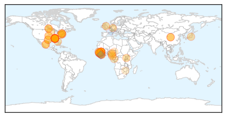
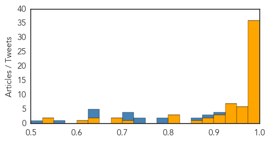
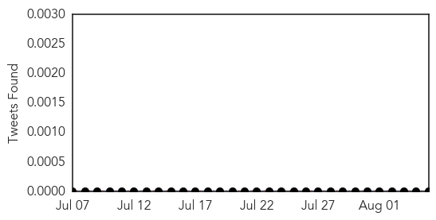

Ebola
30-Day Web Trend
2 alerts, 0 warnings

30-Day Twitter Trend
Article Locations
Article Confidences
Top Articles:
- 1.000
- How to beat the next Ebola
- 1.000
- Finish the fight against Ebola
- 1.000
- Ebola scare tests UAB, public health response
- 1.000
- Sierre Leone records two new cases of #Ebola
- 1.000
- Santa Fe patient released from isolation after Ebola scare
- 0.999
- UPDATE: Birmingham patient thought to have Ebola actually has malaria
- 0.999
- Experimental Ebola vaccine could stop virus in West Africa
- 0.999
- UNMH patient being tested for Ebola-like symptoms
- 0.999
- Guinea seeks to stem spread of deadly Ebola virus in capital
- 0.997
- Sierra Leone Program Manager (part-time)
- 0.997
- Vaccine raises hopes of an end to Ebola
- 0.996
- CDC: FG Prepared for Resurgence of Ebola, Articles
- 0.996
- Ebola Rates Plummet, But WHO Says More to Come
- 0.996
- LIBERIA: UNICEF Donates Ebola Prevention Materials To Bomi
- 0.996
- UN says new Ebola cases in single digits, rainy season will be a challenge
- 0.995
- MSF warns ′fatigue′ will derail efforts to stamp out Ebola in West Africa
- 0.993
- Another sharp Ebola drop, but transmission threats remain
- 0.991
- Liberians Arriving In U.S. Rejected By Family Members For Ebola Fear - Story by James Momoh
- 0.991
- Alabama patient exhibiting ‘Ebola-like symptoms’ after trip to Africa
- 0.990
- Alabama Home Quarantined Over Possible Ebola Case
- 0.989
- Ebola Cases Fall Sharply, W.H.O. Reports
- 0.989
- Ebola Rates Plummet, But WHO States More in the future – NBCNews.com
- 0.989
- New Mexicans prepare for Ebola
- 0.989
- Person in Alabama quarantined for Ebola-like symptoms
- 0.987
- Nine Alabama Residents Currently Being Monitored For 'Ebola-Like' Symptoms : LIFE : Tech Times
- 0.987
- Police: Patient exhibiting ‘Ebola-like symptoms’ taken to Alabama hospital
- 0.985
- Cheering Canada’s vaccine victory
- 0.985
- Are We Prepared for the Next Global Epidemic? The Public Doesn't Think So
- 0.985
- UPDATE: No Ebola found in Birmingham patient, family members, firefighters
- 0.983
- Ebola Outbreak in Nigeria: Increasing Ebola Knowledge of Volunteer Health Advisors.
- 0.983
- Interagency Collaboration on Ebola - Situation Report, Geneva - 5 August 2015 - Sierra Leone
- 0.981
- Ebola Vaccine Trial Is 100% Successful
- 0.980
- Ebola tests negative for Birmingham patient, family members, firefighters
- 0.979
- Official: Alabama patient doesn't have Ebola, tests negative - MyNorthwest
- 0.976
- Ebola Cases Hit New Low
- 0.975
- Alabama home placed under quarantine over possible Ebola case
- 0.973
- City turns to familiar playbook in public response to Legionnaires'
- 0.972
- Japan lab to handle deadliest viruses for first time
- 0.961
- WHO led study shows Canadian made Ebola vaccine protects against dreaded disease
- 0.960
- Ebola research shows the value of vaccines
- 0.960
- Just 2 Ebola cases reported in past week but risks remain, WHO says
- 0.959
- Police: Alabama patient exhibiting ‘Ebola-like symptoms’
- 0.945
- Possible Ebola patient at UAB hospital in birmingham Alabama. Patient traveled to west Africa.
- 0.941
- Officials: Alabama Home Quarantined Over Possible Ebola Case
- 0.940
- Alabama Man Tests Negative For Ebola
- 0.940
- President Koroma Calls for Mutual Accountability in the Implementation of Post-Ebola Recovery programmes
- 0.939
- News Scan for Aug 04, 2015
- 0.938
- Hospital investment to treat Ebola helping in other ways
- 0.932
- Nine people in Florida being monitored for Ebola
- 0.903
- Suspected Ebola patient at UAB tests positive for malaria
Showing top 50 articles...
Top Tweets:
- 0.921
- « Unissons-nous ensemble nous vaincrons Ebola » dit Facinet Bangoura un survivant d’Ebola qui… https://t.co/r90I27nfJc
- 0.900
- Liberia has shown it is possible to gettozero cases of Ebola. I congratulate them on their tremendous progress in the Ebola response.
- 0.868
- ContactTracing Activities during the Ebola Virus Disease Epidemic in Kindia and Faranah Guinea 2014 http://t.co/jPEPB17WrG
- 0.795
- Ebola outbreak shows importance of being prepared; responding rapidly. Health threat anywhere is threat everywhere. globalhealthsecurity
- 0.791
- Ebola Cases Fall Sharply UN Reports - New York Times http://t.co/9KB6RuMmmB ebola EVD
- 0.747
- Ebola Cases Fall Sharply WHO Reports - New York Times http://t.co/CNy8srpFTA ebola EVD
- 0.744
- Suspected Ebola case in west Birmingham - WVTM13 http://t.co/2ekSVb9ij5 ebola EVD
- 0.721
- Mardis: Ebola test negative for firefighters and patient at UAB - WIAT 42 http://t.co/uRPvQpXLUg ebola EVD
- 0.716
- At site of Ebola outbreak in Magazine Wharf Sierra Leone. Important to continue community engagement in response. http://t.co/VGlEvLPdjE
- 0.711
- A key turning point of the response to Liberia’s Ebola outbreak was community action and involvement.
- 0.648
- End Of Ebola? No. Here's Why We Can't Prevent Outbreaks - Forbes http://t.co/twSkYgbOE1 ebola EVD
- 0.646
- UTMB Galveston may soon have Ebola vaccine ready for market - MyFox Houston http://t.co/ZRBRkShGK1 ebola EVD
- 0.646
- Birmingham firefighters quarantined after possible Ebola exposure; UAB ER b http://t.co/HtDXBS4af2 ebola EVD
- 0.565
- Man being treated for Ebola-like symptoms in Birmingham - WVTM13 http://t.co/2pNwP08nr5 ebola EVD
- 0.525
- In the week 27 July-2 August 2 confirmed Ebola cases were reported: 1 in Guinea 1 in SierraLeone https://t.co/FWQb1LcofG EbolaResponse
Measles
30-Day Web Trend
0 alerts, 0 warnings

30-Day Twitter Trend
0 alerts, 0 warnings

Article Locations

Article Confidences

Top Articles:
- 0.999
- Dont worry , be horny!
- 0.963
- Ministry of Health coordinates efforts with WHO to respond to measles outbreak in Sudan
- 0.904
- Sudan FMOH coordinates efforts with WHO to respond to measles outbreak in Sudan - Sudan
- 0.576
- What's behind the 'anti-vax' movement?
- 0.556
- Labels must clarify nosodes are not vaccines
- 0.517
- What’s the Best Way to Sway Vaccine Skeptics?
Top Tweets:
-
No tweets found for Aug 05, 2015